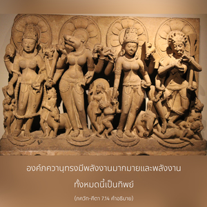
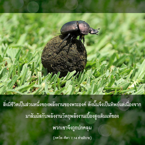

พลังทิพย์ของข้านี้ประกอบด้วยสามระดับแห่งธรรมชาติวัตถุซึ่งเอาชนะได้ยาก แต่พวกที่ศิโรราบต่อข้าสามารถข้ามพ้นไปได้โดยง่ายดาย


องค์ภควานฺทรงมีพลังงานมากมาย และพลังงานทั้งหมดนี้เป็นทิพย์ สิ่งมีชีวิตเป็นส่วนหนึ่งของพลังงานของพระองค์ ดังนั้น จึงเป็นทิพย์ แต่เนื่องจากมาสัมผัสกับพลังงานวัตถุ พลังงานเบื้องสูงเดิมแท้ของพวกเขาจึงถูกปกคลุม จากการถูกปกคลุมด้วยพลังงานวัตถุ จึงทำให้ไม่สามารถเอาชนะอิทธิพลของมันได้ ดังที่ได้กล่าวมาแล้วว่า ทั้งธรรมชาติวัตถุ และธรรมชาติทิพย์ที่ออกมาจากบุคลิกภาพสูงสุดแห่งพระเจ้าเป็นอมตะ สิ่งมีชีวิตอยู่ในธรรมชาติอมตะที่สูงกว่าขององค์ภควานฺ แต่เนื่องมาจากมลทินแห่งธรรมชาติวัตถุที่ต่ำกว่า ความหลงของพวกเขาจึงเป็นอมตะเช่นเดียวกัน ฉะนั้น สภาวะของดวงวิญญาณจึงถูกเรียกว่า นิตฺย-พทฺธ หรืออยู่ในสภาวะอมตะ ไม่มีผู้ใดสามารถย้อนรอยประวัติศาสตร์ว่าตนเองมาอยู่ในสภาวะนี้วันที่เท่าไรในประวัติศาสตร์ทางวัตถุ ด้วยเหตุนี้การที่จะหลุดพ้นจากเงื้อมมือของธรรมชาติวัตถุจึงเป็นสิ่งที่ยากมาก แม้ว่าธรรมชาติวัตถุเป็นพลังงานที่ต่ำกว่า เพราะว่าในที่สุดพลังงานวัตถุที่ถูกกำกับโดยความปรารถนาสูงสุดขององค์ภควานฺ ซึ่งสิ่งมีชีวิตไม่สามารถเอาชนะได้ คำจำกัดความของธรรมชาติวัตถุที่ต่ำกว่าได้ระบุไว้ที่นี้ว่า เป็นธรรมชาติทิพย์ เนื่องจากการเชื่อมสัมพันธ์ และการเคลื่อนไหวทิพย์จากความปรารถนาขององค์ภควานฺ ธรรมชาติวัตถุแม้จะต่ำกว่า แต่ถูกกำกับด้วยความปรารถนาทิพย์ปฏิบัติตนอย่างน่าอัศจรรย์ในการสร้าง และการทำลายของปรากฏการณ์แห่งจักรวาล คัมภีร์พระเวทได้ยืนยันไว้ดังนี้ มายำ ตุ ปฺรกฺฤตึ วิทฺยานฺ มายินํ ตุ มเหศฺวรมฺ “แม้ว่า มายา (ความหลง) จะผิดหรือไม่ถาวร เบื้องหลังฉากของ มายา คือนักมายากลสูงสุดองค์ภควานฺผู้ทรงเป็น มเหศฺวร หรือผู้ควบคุมสูงสุด” ( อุปนิษทฺ )
อีกความหมายหนึ่งของ คุณ คือ เชือก เข้าใจว่าพันธวิญญาณถูกมัดอย่างแน่นหนาด้วยเชือกแห่งความหลง คนที่ถูกมัดมือมัดเท้าไม่สามารถช่วยตนเองให้เป็นอิสระได้ จำเป็นต้องให้คนที่เป็นอิสระช่วย เพราะว่าคนที่ถูกมัดจะไม่สามารถช่วยคนถูกมัดได้ คนที่มาช่วยจะต้องเป็นอิสรเสรีไม่ถูกมัด ฉะนั้น ศฺรีกฺฤษฺณ หรือพระอาจารย์ทิพย์ผู้แทนของพระองค์ที่เชื่อถือได้เท่านั้น จึงสามารถปลดเปลื้องพันธวิญญาณได้ หากปราศจากการช่วยเหลือจากระดับสูงเช่นนี้ เราจะไม่สามารถเป็นอิสระจากพันธนาการแห่งธรรมชาติวัตถุ การอุทิศตนเสียสละรับใช้ หรือกฺฤษฺณจิตสำนึกสามารถช่วยเราให้ได้รับเสรีภาพเช่นนี้ องค์กฺฤษฺณทรงเป็นเจ้าแห่งพลังงานแห่งความหลง ทรงสามารถสั่งพลังงานที่ข้ามพ้นไม่ได้นี้ให้ปลดเปลื้องพันธวิญญาณ องค์กฺฤษฺณทรงสั่งให้ปลดปล่อยดวงวิญญาณที่ศิโรราบด้วยพระเมตตาอันหาที่สุดไม่ได้ และจากความรักที่มีต่อสิ่งมีชีวิตดุจบิดาที่รักบุตรของตน ซึ่งเดิมทีเป็นบุตรที่รักของพระองค์ ฉะนั้น การศิโรราบต่อพระบาทรูปดอกบัวขององค์กฺฤษฺณ จึงเป็นวิถีทางเดียวที่จะทำให้เราเป็นอิสระจากเงื้อมมือของธรรมชาติวัตถุอันเหนี่ยวแน่นนี้
คำว่า มามฺ เอว มีความสำคัญเช่นเดียวกัน มามฺ หมายความว่าแด่องค์กฺฤษฺณ (วิษฺณุ) เท่านั้น ไม่ใช่แด่พระพรหม หรือพระศิวะ ถึงแม้ว่าพระพรหม และพระศิวะจะมีความเจริญมากจนเกือบถึงระดับของพระวิษฺณุ เป็นไปไม่ได้ที่อวตารแห่ง รโช-คุณ (ตัณหา) และ ตโม-คุณ (อวิชชา)จะปลดเปลื้องพันธวิญญาณจากเงื้อมมือของ มายา อีกนัยหนึ่ง ทั้งพระพรหม และพระศิวะก็ยังอยู่ภายใต้อิทธิพลของ มายา พระวิษณุ เท่านั้นที่ทรงเป็นเจ้านายของ มายา ฉะนั้น พระวิษณุเพียงองค์เดียวเท่านั้นที่ทรงสามารถปลดเปลื้องพันธวิญญาณ คัมภีร์พระเวท (เศฺวตาศฺวตร อุปนิษทฺ 3.8) ยืนยันเช่นนี้ในวลี ตมฺ เอว วิทิตฺวา หรือ “อิสรภาพเป็นไปได้จากการเข้าใจองค์กฺฤษฺณเท่านั้น” แม้พระศิวะยังทรงยืนยันว่า ความหลุดพ้นสามารถบรรลุได้ด้วยพระเมตตาของพระวิษณุเท่านั้น พระศิวะตรัสว่า มุกฺติ-ปฺรทาตา สเรฺวษำ วิษฺณุรฺ เอว น สํศยห์ “ไม่มีข้อสงสัยเลยว่า พระวิษฺณุทรงเป็นผู้ให้ความหลุดพ้นสำหรับทุกๆ ชีวิต”